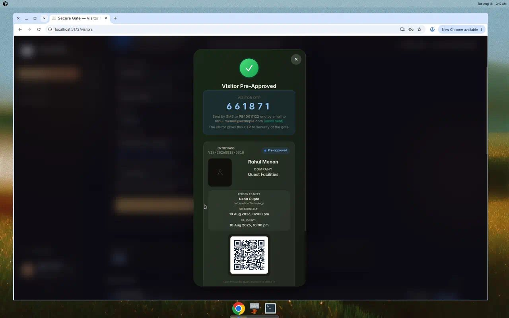
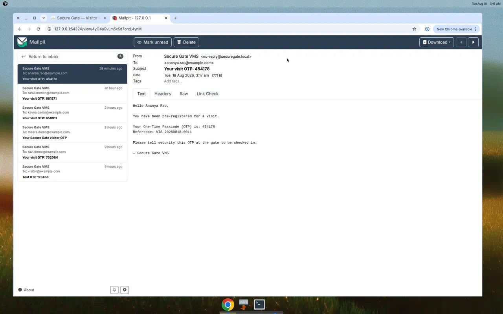
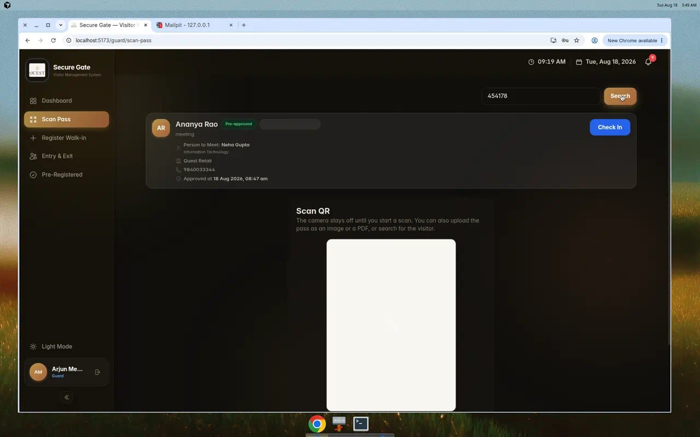
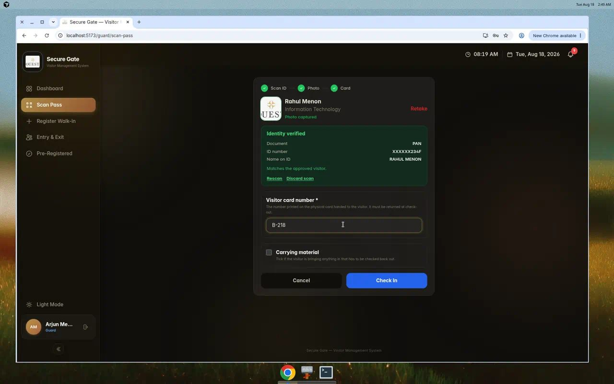
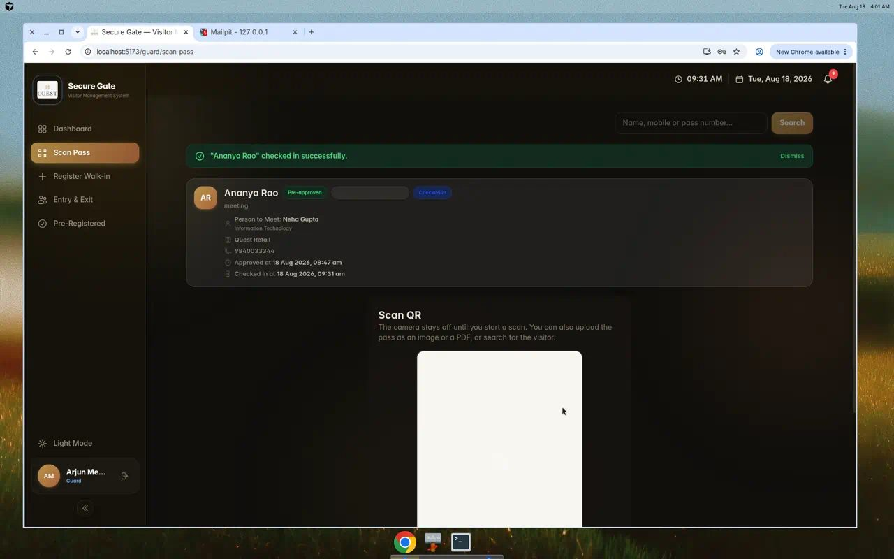
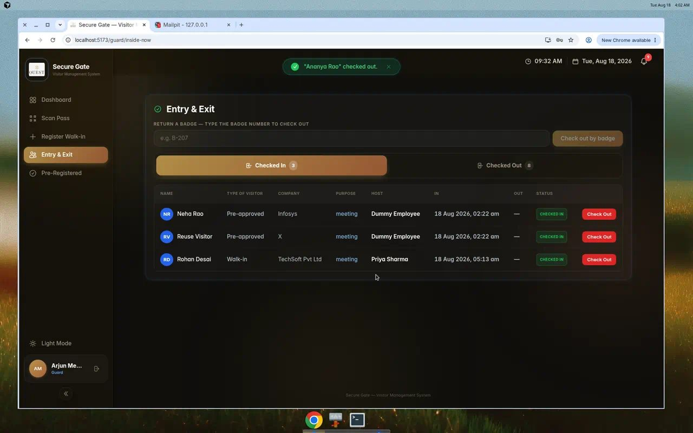
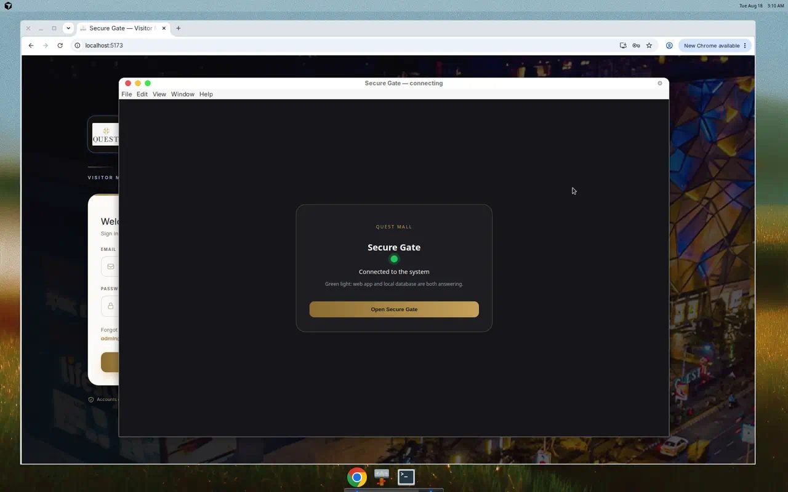

Quest Mall · On-premise
Secure Gate
Visitor management that stays inside the building. Employees pre-register. Security checks identity, issues a badge, and takes it back at exit.
Customer delivery briefing
Requirement
What the customer asked for
- One admin panel: add/remove employees and security guards; see every visit, history, daily status, host-wise detail.
- Employees pre-register a visitor: name, mobile, email, expected date & time.
- OTP generated and sent by email and SMS. Visitor quotes it at the gate.
- Security searches the OTP, takes ID proof and photograph, types the badge number, grants entry.
- On the way out the visitor returns the badge; typing that number checks them out and frees the badge.
- Walk-in without a booking: security captures details → employee approves → OTP emailed to security.
- All of it on the customer’s own premises. Data does not leave the site.
Journey
The visitor’s day, in six beats
One predicate, one list, one badge number. The tile count is the length of the list it opens.
Beat 1 · Employee
Pre-register one visitor

staff.it@demo.vms → Visitors → Pre-Register. Name, mobile, email, slot, OK. Server returns a 6-digit OTP and VIS- ref.
Beat 2 · Visitor is coming
OTP stays on the premises

Ananya Rao, OTP 454178, VIS-20260818-0011. Mailpit is the demo mailbox. Production uses mall SMTP. SMS is logged for a GSM gateway.
Beat 3 · Security desk
Guard finds the visitor by OTP

Scan Pass → type six digits → record first, camera second. Host, department, purpose, phone are already on the card.
Beat 4 · Formalities
ID, photograph, badge number

ID last-four + photo + physical card (e.g. B-218 / B-219). Check In stays disabled until all three exist. If OCR fails: Enter details from the card.
Beat 5 · Entering
Checked in — on the fire-marshal list

Ananya checked in 09:31 IST, badge B-219, host Neha Gupta. Entry & Exit shows her under Checked In until the card comes back.
Beat 6 · Time of return
Type the badge — visit closes

Return a badge → B-219 → tick collected → check out. She leaves Checked In. The number is free for the next visitor.
Desktop client
Green light means the building’s server is up

SecureGate-Portable.exe pings the web app and Auth. Green → Open Secure Gate → login. The .exe is not the database.
Install
Server — first boot
Docker + Node 20 on one PC. Then:
npm install
npx supabase start
node scripts/write-local-env.mjs
npx supabase migration up --local
npm run seed
npm run dev -- --host 0.0.0.0 --port 5173
Windows: installer\windows\Start-Server.bat. Full runbook: docs/customer/SERVER-INSTALL.md
Proof on localhost
The six beats, as captured
1. Employee books (Rahul, OTP 661871).
3. Guard finds Ananya by OTP 454178.
4–5. ID + photo + badge B-219 → entered.
6. Badge returned — she is no longer inside.
Roles
Who does what — enforced in the database
| Role | Does | Cannot |
|---|
| Employee (staff) | Pre-register a visitor, see own department | Check in, issue a badge, edit roles |
| HOD | Pre-approve, approve walk-ins for their department | Admit at the gate, manage all users |
| Guard | OTP lookup, ID + photo, badge in/out | Mint a pass, approve a visit, clear a blacklist |
| Admin | Users, departments, logs, reports, blacklist | Write visit status (read-only over visits) |
| CEO | Second signature to lift a blacklist | Day-to-day visitor desk |
On the premises
How the system is installed inside the mall
One server PC in the security office or IT room.
- Docker runs Postgres, Auth, Storage, Realtime.
- The Secure Gate web app is served on the LAN.
- Mail for OTPs goes to the mall’s SMTP (or an internal catcher).
Clients
- Guards / employees: Windows Secure Gate .exe — green light when the server answers, then login.
- Phones: install the PWA from the same LAN URL and pre-register a visitor from anywhere in the building.
Green light = app + local database both answering. No public cloud in that path.
Cloud vs premises
Where the database lives
| On-premise (this delivery) | Cloud hosted |
|---|
| Data residency | Disk in this building | Vendor region; you trust their DPA |
| Internet outage | Gate still works on the LAN | Gate stops if the WAN is down |
| Who patches Postgres | Mall IT + our runbook | The vendor |
| Capacity | Sized for this site | Elastic, shared tenancy |
| OTP email/SMS | Customer SMTP + GSM gateway | Usually a SaaS mailer |
Quest Mall
How the mall benefits
- The paper register is replaced by a 17-column visitors log the admin can print or export.
- A fire marshal list — who is inside — is live, not a clipboard from an hour ago.
- A visitor cannot be in twice: one open visit per phone, enforced in Postgres.
- Blacklist is two-person (admin flags, CEO clears). A single operator cannot wave someone through.
- Badges are numbered assets: issued at entry, demanded at exit, reusable the next minute.
- Brand stays Quest gold / navy. No third-party logo on the guard screen.
Roadmap
What can be added later — not in this delivery
- Live GSM modem for real SMS (today SMS is logged; email already sends).
- Kiosk in the lobby (the route already exists) with a dedicated tablet.
- WhatsApp file-share of the pass (already a button; no Meta Business account needed).
- Entry-point cameras writing which door was used (column exists; no writer yet).
- Hindi UI, digital NDA pad, scheduled auto-checkout — listed in the product charter as later work.
Go-live
Questions we must ask before turning this on at Quest Mall
- Where does the server sit (UPS, lockable rack, whose key)?
- What is the LAN subnet the guard PCs and HODs’ phones will use?
- Who is the SMTP relay (and the From: address) for visitor OTPs?
- Is there a GSM modem / DLT template if real SMS is required on day one?
- Who are the first Admin, HODs, guards — names, emails, departments?
- Retention: how many days of visitor photos may stay on disk (default 365)?
- Printer at the desk: thermal badge, or a numbered plastic card only?
- Who holds the CEO role for blacklist removal?
- Backup: nightly copy of the Postgres volume to which disk / whose offsite?
Training
Who clicks what on day one
- Employee (desktop or phone PWA): Visitors → Pre-Register a Visitor. Read the OTP to the guest.
- Visitor: no app. Quote the six digits. Hand over ID. Wear the badge. Return it.
- Guard (Secure Gate .exe, green light): Scan Pass → OTP → ID + photo → badge → Check In. Exit: return the badge number.
- HOD: approve or decline walk-ins. Admin: users and the visitors log — never a check-in.
Demo
Logins for the working local system
Password for all seeded users: demo123
| Who | Email |
|---|
| Admin | admin@demo.vms |
| Employee | staff.it@demo.vms |
| Guard | guard@demo.vms |
| HOD (IT) | hod.it@demo.vms |
App: http://localhost:5173 · Mail (OTP inbox): http://127.0.0.1:54324
Play the journey video once with the customer, then let a guard repeat it on a demo laptop with staff.it@demo.vms / guard@demo.vms.